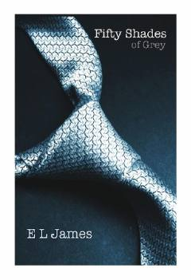

FSAnastasiya Stil va Kristian Grey o'rtasidagi ehtirosli va murakkab sevgi hikoyasi.
E L James tomonidan yozilgan ushbu mashhur roman yosh kollej bitiruvchisi hamda sirli biznesmen o'rtasidagi murakkab va ehtirosli munosabatlar haqida hikoya qiladi. Asar butun dunyo bo'ylab katta shuhrat qozongan hamda bestsellerga aylangan.